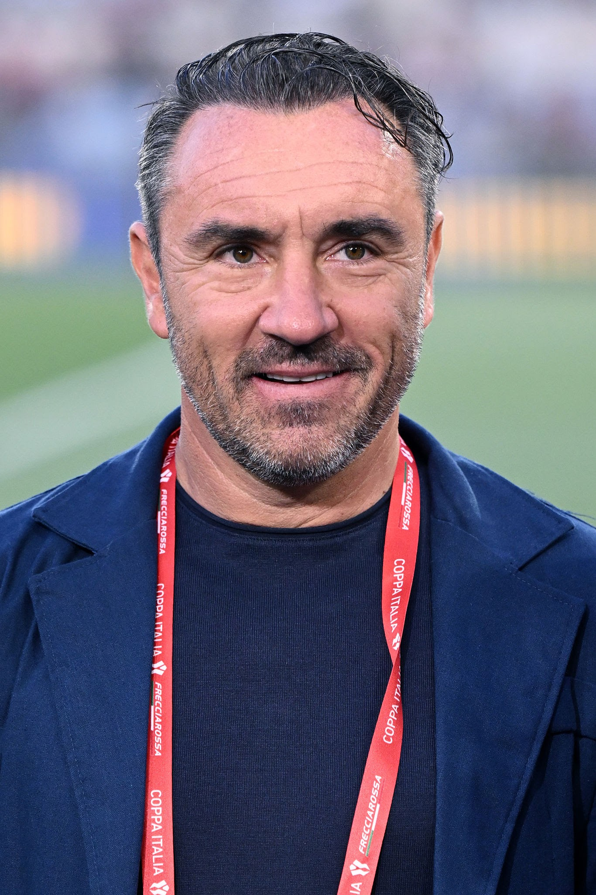
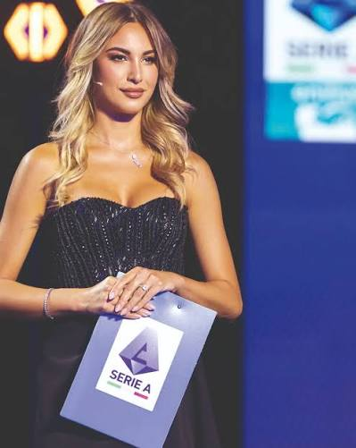
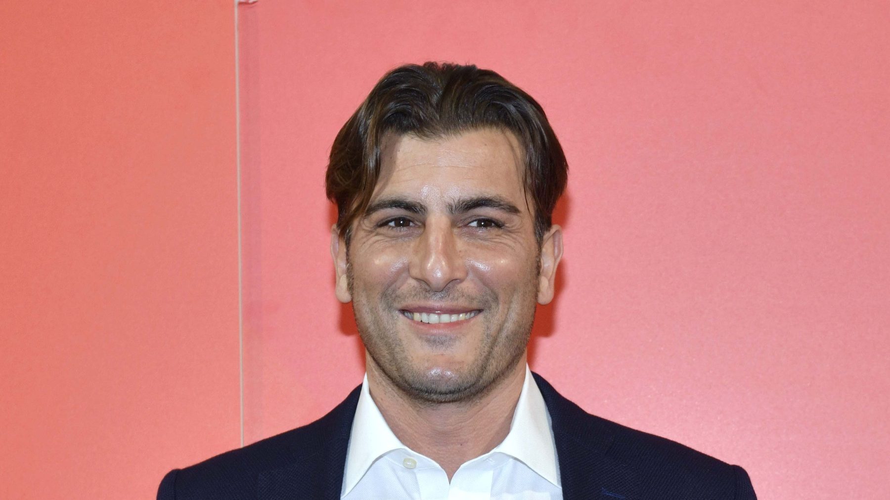

Cristian Brocchi
Ex centrocampista che ha militato nelle file di Milan, Pro Sesto, Lumezzane, Verona, Inter, Fiorentina e Lazio

Cristian Panucci
Ex difensore che ha militato nelle file di Genoa, Milan, Real Madrid, Inter, Chelsea, Monaco, Roma e Parma

Chiara Giuffrida
Madrina del Ladispoli Summer Sport
Nota giornalista pubblicista, conduttrice televisiva e speaker radiofonica italiana, specializzata nel settore sportivo e legata in particolare al mondo del calcio

Paolo Di Canio
Ex attaccante e seconda punta che ha militato nelle file di Lazio, Ternana, Juventus, Napoli, Milan, Celtic, Sheffield Wednesday, West Ham United, Charlton Athletic e Cisco Roma

Nicola Ventola
Ex attaccante che ha militato nelle file di Bari, Inter, Bologna, Atalanta, Siena, Crystal Palace, Torino e Novara.

Nicola Amoruso
Ex attaccante che ha militato nelle file di Sampdoria, Fidelis Andria, Padova, Juventus, Perugia, Napoli, Como, Modena, Messina, Reggina, Torino, Siena, Parma, Verona e Atalanta

Mark Iuliano
Ex difensore che ha militato nelle file di Salernitana, Bologna, Monza, Juventus, Real Mallorca, Sampdoria, Messina e Ravenna

Vincenzo Iaquinta
Ex attaccante che ha militato nelle file di Reggiolo, Padova, Castel di Sangro, Udinese, Juventus e Cesena.